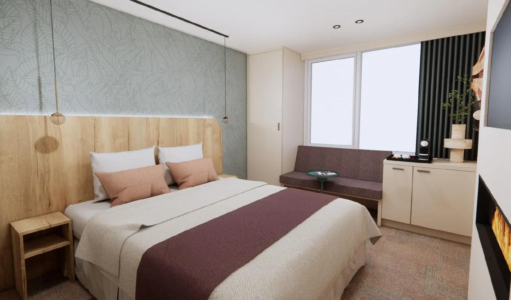
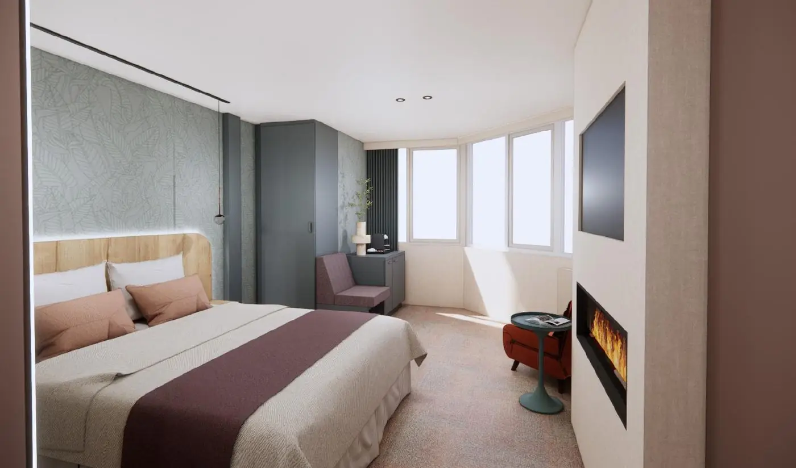
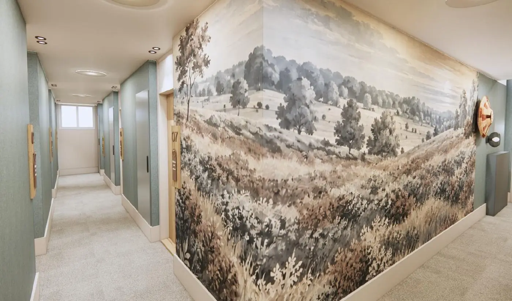

Dit seizoen
Vrolijk Voorjaar
1 april – 1 mei
Het voorjaar ontwaakt op de heide. Bezoek de schaapskooi en het bezoekerscentrum en sluit af met een pannenkoek of een glas wijn.
vanaf € 185 p.p., 2 nachten
Beschikbaarheid bekijken
Impressie van de vernieuwde kamers
Halfpension in elk seizoen: overnachten, uitgebreid ontbijt en elke avond een 3-gangendiner in ons restaurant. Overdag wandelt of fietst u door het Dwingelderveld, met heide, bos en de oude schaapskooi.
Vier de feestdagen in Ruinen. Wandel over de winterse heide, schuif aan bij de open haard en geniet elke avond van een 3-gangendiner. Alles voor onze normale winterprijs.
Elk arrangement duurt 2 tot 7 nachten en kan op elke dag van de week beginnen.
1 april – 1 mei
Het voorjaar ontwaakt op de heide. Bezoek de schaapskooi en het bezoekerscentrum en sluit af met een pannenkoek of een glas wijn.
vanaf € 185 p.p., 2 nachten
Beschikbaarheid bekijken1 mei – 1 oktober
Fietsen en wandelen door bos en heide van het Dwingelderveld, met onderweg genoeg terrasjes om even te zitten.
vanaf € 190 p.p., 2 nachten
Beschikbaarheid bekijkenIn de herfst
Het Dwingelderveld in herfstkleuren. De oude schaapskooi en het bezoekerscentrum zijn open.
vanaf € 180 p.p., 2 nachten
Beschikbaarheid bekijkenIn de winter
Even op adem komen. Lange schaduwen over de open heide, en daarna een warme kamer en een goed diner.
vanaf € 180 p.p., 2 nachten
Beschikbaarheid bekijkenU kiest bij het arrangement zelf uw kamertype.
Ruim en comfortabel, op de verdieping van het hoofdgebouw.
Zeer ruim, op de begane grond in de vleugel van het hotel, met eigen entree.
Compacter en voordeliger. Te boeken bij het zomer-, herfst- en winterarrangement.


Impressies van de vernieuwde kamers en gang.
Kies uw datums en het aantal personen. U ziet direct de actuele prijzen van kamers en arrangementen in ons boekingssysteem en kunt meteen boeken.
Liever eerst overleggen? Bel ons op 0522 47 12 37, dan denken we graag mee.
Eerder op de kamer of later vertrekken kan in overleg, afhankelijk van de beschikbaarheid.